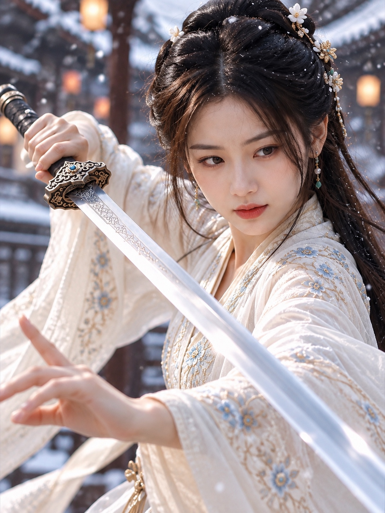
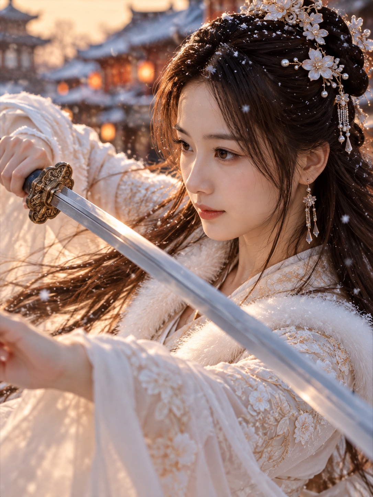

光影日記
從雪庭舞劍到林蔭午後、月映晚霞與台北暮光，收藏那些值得停留的片刻。
DEGOO ALBUM · 2026.09
喵叔攝影館｜雪庭舞劍
Degoo 公開相簿新增的兩張舞劍人像。在 Degoo 開啟完整相簿 ↗

喵叔攝影館 · Degoo 公開相簿

喵叔攝影館 · Degoo 公開相簿
NEW COLLECTION · 2026.09
雪庭舞劍
八幅古風人像，記錄雪色、夕光與劍影交錯的瞬間。
雪庭舞劍 · 人像影像創作

雪庭舞劍 · 人像影像創作
雪庭舞劍 · 人像影像創作

雪庭舞劍 · 人像影像創作
雪庭舞劍 · 人像影像創作
雪庭舞劍 · 人像影像創作
雪庭舞劍 · 人像影像創作
雪庭舞劍 · 人像影像創作
PHOTO JOURNAL
光影片刻

光穿過枝葉，落在舊鐵道旁。

在光與影之間，留住一瞬溫柔。

在樹蔭與鐵道交會的午後，留下另一種光影。

橘紅雲霞與深藍暮色之間，明月靜靜升起。

夕照退入群山，城市的燈火一盞盞亮起。

晚霞尚未散去，台北的光已在山前延展。

山影漸深，城市在橘紅天空下閃爍。

暮色落定，台北 101 與城市燈火照亮夜空。
群山與高樓之間，燈光勾勒台北的輪廓。